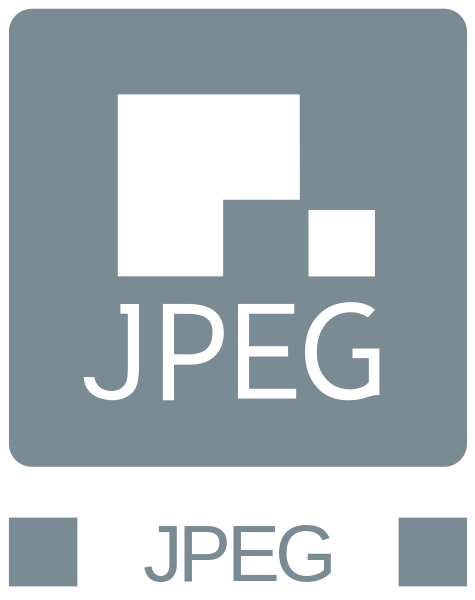
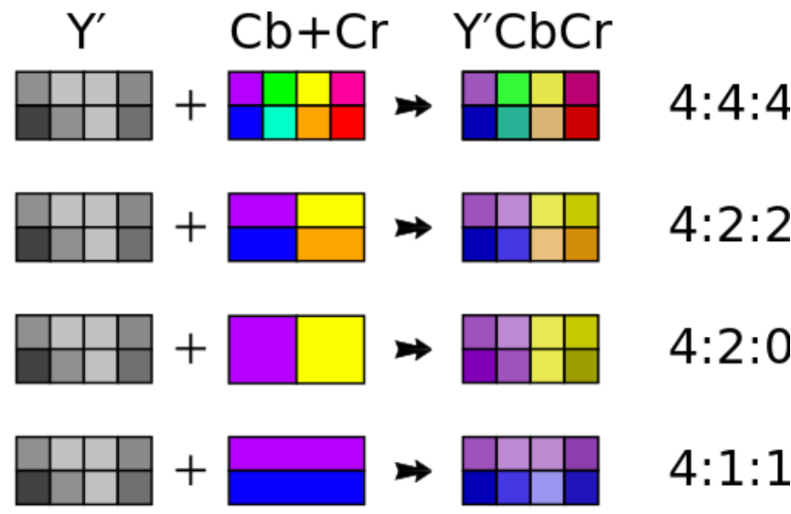
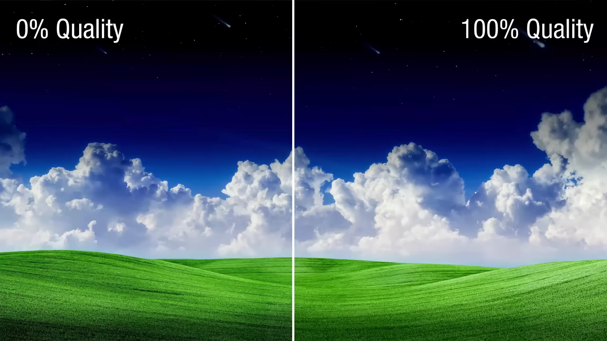
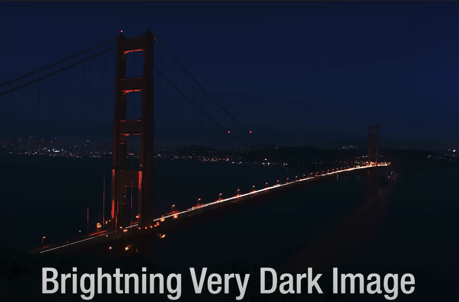
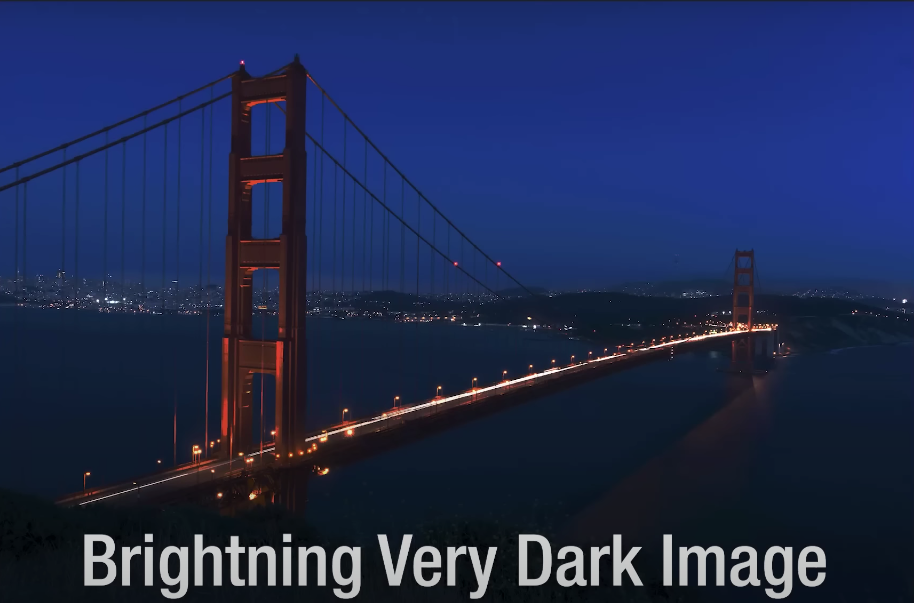
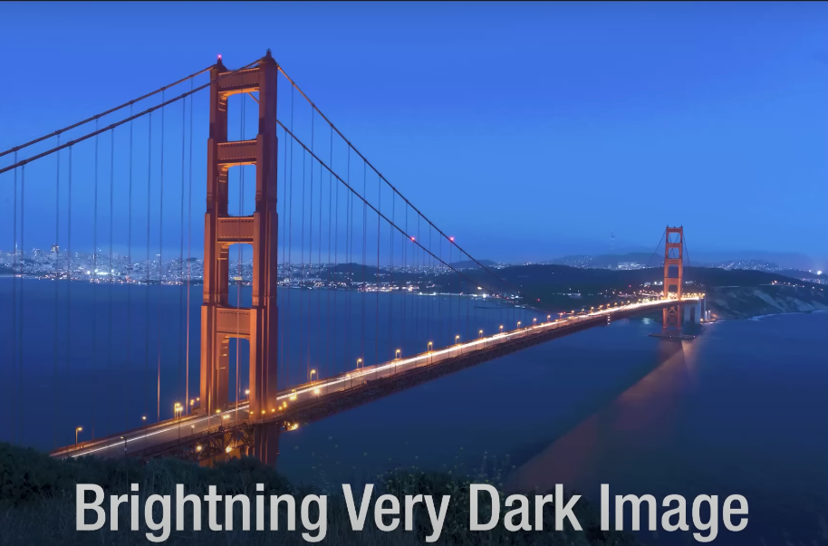

Preface - An overview of my topic
The objective of this paper is to create an inequality of a sweet spot of image quality and file size, between .PNG and .JPEG file types. Then using this infromation, I can decide which which file type is better overall. This paper will begin with a short introduction to each image type and some backgorund info.
This section will provide some vital pieces of information on each file type and it's structure.
JPEG
JPEG Logo

/ˈdʒeɪpɛɡ/ JAY-peg
The short form of Joint Photographic Experts Group
Formal Defention: An image file format for the compression of digital imagpes. Employs lossy compression techniques to reduce file size of images while maintaining a visually acceptable level of quality. JPEG files typically utilize the ".jpg" or ".jpeg" file extension.
[Quick Note] .JPEG and .JPG are the EXACT same thing
- The only reason
.JPG was invented was becuase some really old file systems only supported three-letter file extensions
Key Features:
- Lossy Compression: JPEG employs lossy compression, meaning that some image data is discarded during the compression process. This compression method results in smaller file sizes but may lead to a slight degradation in image quality.
[Quick Note] The great amount image data discarded during lossy compression can lead to generational degredation.
- Variable Compression Levels: JPEG allows for different compression levels, enabling users to balance between file size and image quality. Higher compression levels result in smaller file sizes but may lead to more noticeable image artifacts.
[Quick Note] The variable compression levels allow for different quality and file sizes for a multitude of uses
- Compatibility: JPEG is supported by virtually all web browsers, image editing software, and digital cameras, making it one of the most widely used image formats.
[Quick Note] The compatablity allows it to be used across a variety of devices without any hinderence
- Color Support: JPEG supports both grayscale and full-color images, with the ability to display millions of colors.
[Quick Note] Although the color support is good enhough for the human population, it does not provide a variety of colors but rather just a 8-bit color depth. Other image file types provide greater support at the cost of file size. [Only allows Red, Green, and Blue channels, no alpha channels (RGB color support)]
- Metadata: JPEG files can contain metadata such as EXIF (Exchangeable Image File Format) data, which stores information about the image, such as camera settings, date, and time.
[Quick Note] Metadata being intergrated into JPEG can make it easy to find out where the image was obtained/orignates from.
JPEG structure
JPEG files consist of several segments, including:
SOI (Start of Image): Marks the beginning of the JPEG file.
APPn (Application-specific Segments): Contains various application-specific data, such as metadata.
DQT (Define Quantization Table): Specifies the quantization tables used for compressing image data.
DHT (Define Huffman Table): Defines Huffman tables used for entropy coding.
SOF (Start of Frame): Describes the image parameters such as image dimensions and color space.
DRI (Define Restart Interval): Specifies the interval for restart markers in the image data.
Scan Data: Contains the compressed image data.
EOI (End of Image): Marks the end of the JPEG file.
Usage
JPEG is commonly used for storing and sharing photographs, digital artwork, and other complex images on the web and in various digital media. It is favored for its balance between image quality and file size, making it suitable for a wide range of applications, including websites, social media, digital publications, and personal photography.
The process of JPEG compression
- Chrominance subsampling: This technique reduces the amount of information stored for color (chroma) compared to brightness (luma). Since the human eye is less sensitive to changes in color compared to changes in brightness, this method reduces file size by storing less detail for color information.

Discrete cosine transformation (DCT) and quantization: In this step, the image is divided into small blocks, and each block undergoes a mathematical transformation called discrete cosine transform (DCT). This transforms the pixel values from the spatial domain to the frequency domain. Then, quantization is applied, which reduces the precision of the transformed coefficients. This step discards some data that contributes less to the overall image quality, further reducing the file size.
Run-length Delta & Huffman encoding: After quantization, the remaining data is compressed using run-length encoding, which reduces redundancy by representing repeated values as a single value and a count. Then, Huffman encoding is applied to further compress the data by assigning shorter codes to more frequently occurring symbols, taking advantage of the statistical properties of the data.
[Quick Note] This is a simple cut down summarization of Lossy Compression, it might not be fully accurate. But what I wrote above shows the main preface of lossy compression.
- Lossy compression is often used in scenarios where some loss of quality is acceptable in exchange for a significant reduction in file size. It is widely used in applications like image and video compression for the web, streaming media, and digital photography, where the goal is to balance file size with acceptable perceptual quality.
JPEG compression can go from 0% [worst quality, least size, most compression], to 100% [best quality, most size, least compression]
Some image viewing software like IrfanView, can show the exact compression percentage

(Look at the number after "Quality")
JPEG compression is optimized with complex caclculations, so the difference is not as visible zommed out.

But when zoomed in, the difference is clear.
PNG
[PNG doesn't have a specific Logo]
PNG

officially pronounced /pɪŋ/ PING, colloquially pronounced /ˌpiːɛnˈdʒiː/ PEE-en-JEE
The short form of Portable Network Graphics
Formal Defention: A raster graphics file format designed for the lossless compression and storage of digital images. It is widely used for web graphics, digital photography, and other applications where image quality and transparency are crucial. PNG files typically utilize the ".png" file extension.
Key Features
- Lossless Compression: PNG employs lossless compression techniques, which preserve all image data without sacrificing quality. Unlike lossy compression formats such as JPEG, PNG compression does not discard any image information, resulting in higher-quality images.
[Quick Note] Lossless compression keeps the original image information causing the file size to be rather high to other compression options.
- Transparency Support: PNG supports alpha channel transparency, allowing for the inclusion of transparent areas within an image. This transparency feature is particularly useful for graphics such as logos, icons, and illustrations that require blending seamlessly with different backgrounds.
[Quick Note] Alpha Channel support can allow for transperency and translucency which makes PNG's a great choices for web graphics
- Wide Color Depth: PNG supports various color depths, including grayscale, indexed color, and truecolor (24-bit RGB), enabling the representation of images with millions of colors. It also supports additional color spaces such as RGB with alpha channel (RGBA) and grayscale with alpha channel (GA), facilitating advanced image editing and manipulation.
[Quick Note] The wide range of colors allow for better image quality.
Color
type |
Name |
Binary |
Masks |
|---|
| ------- |
-------------------------- |
- |
A |
C |
P |
----------------- |
| 0 |
Grayscale |
0 |
0 |
0 |
0 |
|
| 2 |
Truecolor |
0 |
0 |
1 |
0 |
color |
| 3 |
Indexed |
0 |
0 |
1 |
1 |
color, pallete |
| 4 |
Grayscale and Alpha |
0 |
1 |
0 |
0 |
alpha |
| 6 |
Truecolor and Alpha |
0 |
1 |
1 |
0 |
alpha, color |
| Color Type |
Channels |
Bits per channel |
|---|
| |
|
1 |
2 |
4 |
8 |
16 |
| Indexed |
1 |
1 |
2 |
4 |
8 |
- |
| Grayscale |
1 |
1 |
2 |
4 |
8 |
16 |
| Grayscale and Alpha |
2 |
- |
- |
- |
16 |
32 |
| Truecolor |
3 |
- |
- |
- |
24 |
48 |
| Truecolor and Alpha |
4 |
- |
- |
- |
32 |
64 |
Human eyes can only see around 10 million colors. JPEGS support 8-bit color depth. 8 bit color means there are 8 colors in each channel with 8 shades of each color. So there are 8^2 colors in each channel. There are 3 channels in a JPEG, so there are 256x256x256 colors possible [16,777,216]. You may be asking WHY images need that many colors if even human eyes can't see the colors. The reason is photoshop.
A normal JPEG with 8-bit color depth:


As you can see, an 8-bit color depth image after brightening artifically, returns a very grainy and artifact-filled image
PNG has access to truecolor, 24-bit color depth, which makes it the superior choice for photoshop
- Compression Efficiency: PNG compression algorithms are optimized for efficient storage of image data while minimizing file size. Although PNG files tend to be larger than equivalent JPEG files, they offer superior image quality and transparency support, making them ideal for certain types of graphics where quality is paramount.
[Quick Note] Lossless compression causes the image quality to be high, but the file size to also be high.
You might also assume PNG's don't have lossy compression, but they do, it's called indexing a PNG. The main premise is using calculations to find the closest and most reoccuring colors and making a pallete and only using that pallete.
- Metadata: PNG files can contain metadata such as textual information, copyright details, and creation timestamps. This metadata enhances the organization and retrieval of PNG images and provides valuable context about the image content.
[Quick Note] Titles, Author, and much more information can be displayed thorugh metadata in a PNG image.
Section Two - Determining
PNG
Lossless Compression: PNG uses lossless compression, meaning it preserves all the original image data without any loss of quality. This makes it ideal for images that require high quality and sharpness, such as diagrams, logos, and text-based graphics.
Supports Transparency: PNG supports alpha channels, allowing for transparent backgrounds or partially transparent images. This makes PNG suitable for images that need to be overlaid on different backgrounds, like logos or icons.
Wide Color Support: PNG supports a wide range of color depths including truecolor (24-bit) and indexed color (8-bit), making it versatile for various types of images.
No Artifacts: Since PNG is lossless, it doesn't introduce compression artifacts, ensuring a clean and crisp image without any distortion or blurriness.
Animation: Since PNG/APNG allows multiple frames with devaiations of seconds in which it is displayed, animation is possible.
JPEG
High Compression Ratio: JPEG compression is highly efficient, allowing for significant reduction in file size while retaining decent image quality. This makes it suitable for photographs and images with complex color gradients.
Widespread Compatibility: JPEG is supported by virtually all devices and software, making it a universal format for sharing and displaying images across different platforms.
Variable Quality Levels: JPEG allows users to adjust the level of compression, balancing between file size and image quality according to their needs. This flexibility is particularly useful for web publishing and digital photography.
Progressive Loading: JPEG supports progressive loading, meaning that a low-resolution version of the image is displayed first, followed by higher resolutions. This allows for faster initial display, making it suitable for web pages and online viewing.
Works Cited
Contributors to Wikimedia projects. “JPEG.” Wikipedia, https://en.wikipedia.org/wiki/JPEG. Accessed 10 May 2024.
Contributors to Wikimedia projects. “Chroma Subsampling.” Wikipedia, 13 Apr. 2024, https://en.wikipedia.org/wiki/Chroma_subsampling. Accessed 10 May 2024.
Contributors to Wikimedia projects. “PNG.” Wikipedia, 6 May 2024, https://en.wikipedia.org/wiki/PNG. Accessed 10 May 2024.
MDN contributors. “Lossy Compression - MDN Web Docs Glossary: Definitions of Web-Related Terms.” MDN Web Docs, 7 Mar. 2024, https://developer.mozilla.org/en-US/docs/Glossary/Lossy_compression. Accessed 10 May 2024.
MDN contributors. “Lossless Compression - MDN Web Docs Glossary: Definitions of Web-Related Terms.” MDN Web Docs, 7 Mar. 2024, https://developer.mozilla.org/en-US/docs/Glossary/Lossless_compression. Accessed 10 May 2024.
MDN contributors. “Lossless Compression - MDN Web Docs Glossary: Definitions of Web-Related Terms.” MDN Web Docs, 7 Mar. 2024, https://developer.mozilla.org/en-US/docs/Glossary/Lossless_compression. Accessed 10 May 2024.
ThioJoe. “Are You Using the WRONG Image Format?” YouTube, Video, 28 June 2023, https://www.youtube.com/watch?v=68H1H6Z_gz4. Accessed 10 May 2024.